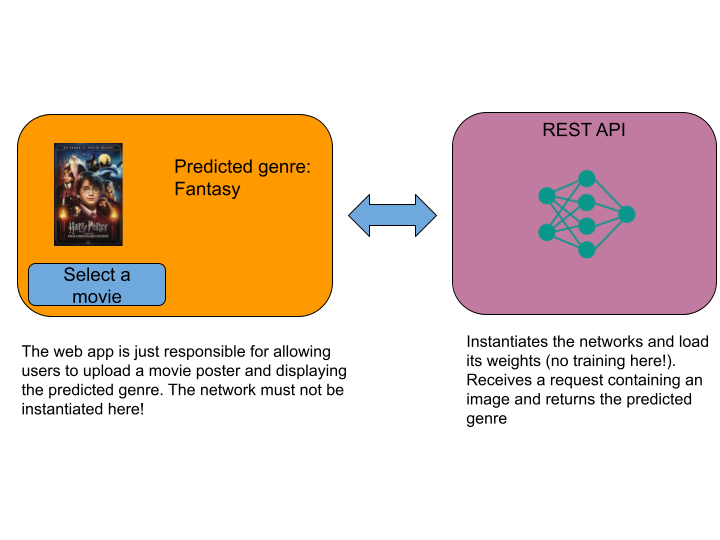
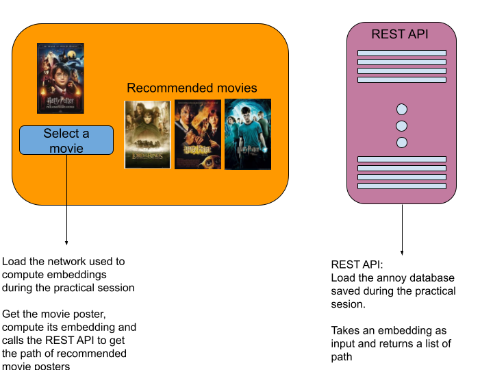

Project:
Welcome to the final project presentation page!
In the following, you will find the instructions for the project that you will have to complete during the course.
This project will be composed of 4 parts.
I tried to build it in a way that would make you use all the tools and frameworks that we will see in class and that would let you start working each individual part once you have completed the corresponding practical session.
We will build a web application that will help users to perform many operations about movies like: - predicting the genre of a movie according to its plot or its poster - recommending movies according to the posters or their plots - detect wether an image is a poster of a movie
During the last hour of every second practical session, you are allowed to start working on the project.
I really recommend you to do so, but I also encourage you to finish the corresponding practical session before starting the project.
I will provide you with a solution for the practical session that you can use as a reference.
Part 1: Development tools for Data Scientist
You should now have completed practical sessions associated to the project. If not I would recommend to do them before continuing.
In the practical sessions, you should have learned how to use docker and how to create a rest API using flask.
In parallel, you should have learned in HDDL how to use a pre-trained model and how to fine-tune it to perform a new task.
For this first part of the project, I would like you to train a pretrained model to predict the genre of a movie according to its poster.
Then you will have to create a rest API to predict the genre of a movie according to its poster.
Then use gradio to create a web interface that calls this API and allows users to upload a movie poster and get the predicted genre.
Once all this is done, you will have to create a docker file to package your API and web interface and push it to a github repository that you will have to share with me.
Please do not store the models weights in your repository, but rather on a cloud like Google drive and make your docker file download them at runtime.

Dataset:
I created a dataset of movie posters and their corresponding genres.
Posters are stored in their corresponding genre folder in such a way that it is easy for you to load with the torchvision.datasets.ImageFolder class.
You can download it here.
Do not store it in your Github repository!
Additional help:
An easy way to run both the web app and the REST API in a single container would consist to create a bash script that runs both the web app and the API service.
This is not the best practice, but it might be easier for you to do so. Thus you can start with this solution and then try to run the web app and the annoy index in two different containers.
Here is an example of a bash script that runs both the web app and the rest API:
#!/bin/bash
python python api.py & gradio_app.py
The & operator is used to put jobs in the background.
Here the API service is run in the background and the web app is run in the foreground.
Call this script in your docker file to run the application.
The good practice consists in runnnig the web app in a docker container and the API in another container.
To do so you can use docker-compose.
Look at the docker-compose documentation to learn how to use it.
Here are the theroritical steps to follow to run the web app and the API in two different containers using docker-compose.
First, you need to create Dockerfiles for both the Gradio web app and the API.
Then create a docker-compose.yml file to define and run the multi-container Docker applications. For exemple something like:
version: '3.8'
services:
gradio-app:
build:
context: .
dockerfile: Dockerfile-gradio
ports:
- "7860:7860"
depends_on:
- model_api
model_api:
build:
context: .
dockerfile: Dockerfile-api
ports:
- "5000:5000"
Make sure in your gradio app to call the API through the url http://model_api:5000/ as the base URL for API requests.
To run the application, run the following command in the same directory as the docker-compose.yml file:
docker-compose up
The Gradio web app should be accessible at http://localhost:7860.
The REST API, if it has endpoints exposed, will be accessible at http://localhost:5000.
To stop and remove the containers, networks, and volumes created by docker-compose up, run:
docker-compose down
Part 2: Recommendation systems based on posters
During the practical session, you saw how to build a recommender system based on content using the movie posters.
Use Gradio to build a web app that takes as input a movie poster and returns the images of the 5 most similar movies according to their poster.
I would like you to mimic a real recommender system using a vector database.
To do so I want the database to be requested by the web app through a REST API.
The web app should be light and fast.
Use a pre-trained network only to extract the vector representation of the input image and call through the REST API the annoy index you built during the practical session to find the 5 most similar movies.

For the sake of simplicity, I would recommend you to use the same network you used in the previous part and just adding a new route to the API to return the 5 most similar movies.
Dataset:
Use the same dataset as in the practical session.
Part 3: Recommendation systems based on plots
During the practical session, you saw how to compute embeddings of documents using three techniques: Bag_of_words, Word2Vec and BERT.
You will now build a recommender system based on content using the movie plots.
To do so get the movies_metadata.csv file from here and compute the embeddings of each movie plot (the overview column) using at least a bag-of_word technique and a pre-trained model (Glove or DistillBert).
You sould create one new column for each embedding technique.
Once this is done, build an annoy index for each embedding.
Similarly to the recommender system project, I want you to build a web app that takes a movie description as input and returns the 5 most similar movies according to their plot.
The web app should be light and fast and provide the possibility to choose the embedding technique to use.
Part 4 OOD:
Modify the part 1 to whether the image uploaded by the user is a movie poster or not.
If it is a movie poster, predict the genre of the movie.
If it is not a movie poster, display a message to the user.
What you are going to submit:
Make a private repository on github and share it with me.
In this repository, you will have to store the following:
- The code for the 4 parts of the project
- The corresponding docker files and docker-compose file if any
- A readme file explaining how to run the project. I will make nothing more than running the commands written in the readme file. I suggest you to try to run the entire project from a clean environment to make sure that it works.
- Do not store the models weights in your repository, but rather on a cloud like Google drive and make your docker file download them at runtime.
- Same for the dataset, not stored on a drive if it is not necessary but also downloaded at runtime.
Evaluation criteria:
- The project is working and runs without errors
- The readme file is well written and explains how to run the project
- Clarity of the code
- The project is well organized
- No unecessary libraries are installed in each container
Deadline:
The project is due on the 16th of February at 11:59 PM.
Invite me to the repository.
Please send me an email to confirm that you have completed the project containing the name of all the members of the group and the link to the repository.
Additional help:
You can find a small example of how to create and orchestrate both the API and the web interface using docker compose here. Try to understand how it works and then modify it to fit the project.